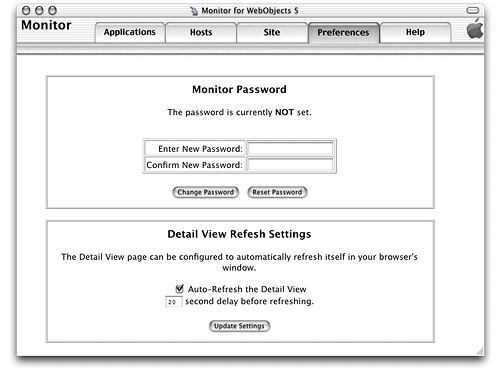
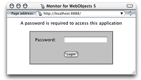
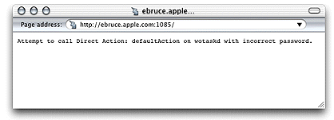

When you click the Preferences tab in Monitor, the page in Figure 6-18 is displayed. It contains two sections: Monitor Password and Detail View Refresh Settings.
Figure 6-18 The Preferences page of Monitor
You can restrict access to Monitor by requiring its users to enter a password before they can use it. When a site is protected this way, the site's wotaskd processes are also protected; that is, you cannot directly obtain a wotaskd process's information by connecting to its port, as described in "Confirming That wotaskd Is Active".
Figure 6-19 shows the login page that Monitor displays after you password-protect your site.
Figure 6-19 Login page displayed by Monitor on a password-protected site
When you try to view the configuration of an application host on a site that you've password-protected by connecting to the appropriate wotaskd process's port, you'll see a page similar to the one shown in Figure 6-20 (the page's content varies according to your deployment platform).
Figure 6-20 Page returned by wotaskd when the site is password-protected
On password-protected sites, you'll have to use Monitor to view an application host's configuration.
This section allows you to tell Monitor if you want it to refresh the application detail page and how often to do it.
© 2001 Apple Computer, Inc. (Last Updated August 25, 2001)